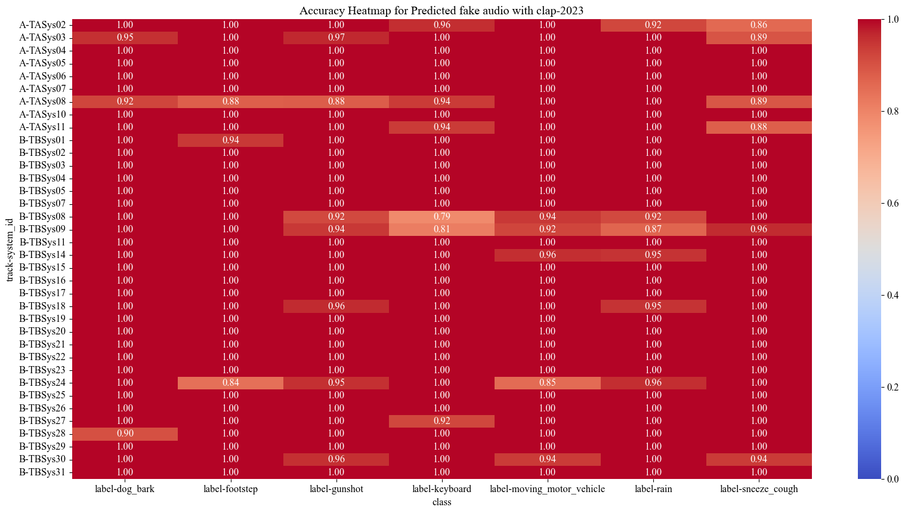
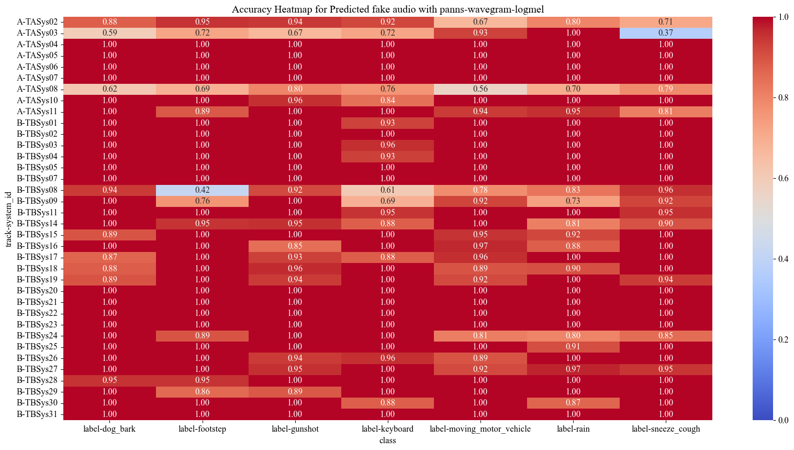
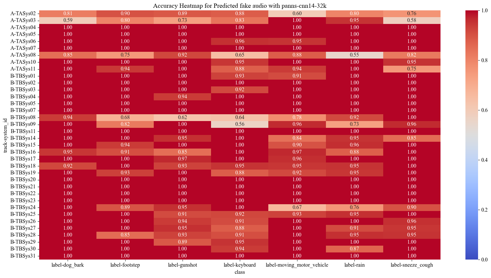
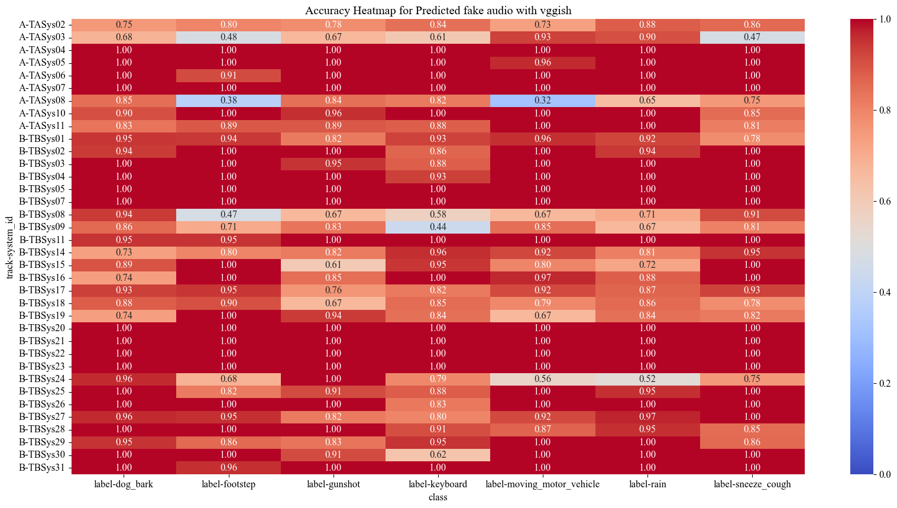

With the ever-rising quality of deep generative
models, it is increasingly important to be able to discern whether
the audio data at hand has been recorded or synthesized. While
the detection of fake speech signals has been studied extensively,
this is not the case for the detection of fake environmental audio.
We propose a simple and efficient pipeline for detecting fake
environmental sounds based on the CLAP audio embedding. We
evaluate this detector by using audio data from the 2023 DCASE
challenge task on Foley sound synthesis.
Our experiments show that fake sounds generated by 44 state-
of-the-art synthesizers can be detected with 98% accuracy on
average. We show that using an audio embedding learned on
environmental audio is beneficial over a standard VGGish one as
it provides a 10 % increase in detection performance. Informal
listening to Incorrect Negative examples demonstrates audible
features of fake sounds missed by the detector such as distortion
and implausible background noise.
Our proposed system for audio fake detection is based on a multilayer perceptron (MLP) model. Instead of feeding directly the audios to our detector, we use the embeddings generated by different systems. The bellow figure shows an overview of the pipeline used in the experiments for the Deepfake detection, with a representation of the MLP’s network architecture. The value of dim depends on the embedding method used.
Experimental code is available at this github repo.
The following samples allow you to listen to incorrect positives
| Sound cue | Sound example | Class sound |
| Wrong category sounds (sneeze with snore at end) | Sneeze cough | |
| Maybe it were foley recordings | footstep | |
| Mostly noise | footstep | |
| background noise that sounds whistly | Dog bark | |
| Repetitive sound | footstep | |
| Echoes that we know are real, but system thinks are fake | Sneeze cough |
The following samples allow you to listen to incorrect negatives
| Sound cue | Sound example | Class sound | System |
| Wrong category, guntshot sounds like footstep footstep | footstep | TrackA system08 | |
| Single brief event | keyboard | TrackA system11 | |
| background noise that sounds unsual | keyboard | TrackB system27 | |
| Repetition of a section | moving Motor | TrackB system09 | |
| Overlapping Repetition is easy to hear | footstep | TrackB system24 | |
| Difficut to discern if unrealistic noise is frim saturation/clipping or fake | moving Motor | TrackB system30 | |
| Artificial coughts have no emotion, sound robotic | Sneeze cough | TrackA system02 |
The accuracy matrix bellow shows the accuracy per class (the x-axis) and per system (the y-axis, Track-system) for the MLP model using the MS-Clap embeddings
The accuracy matrix bellow shows the accuracy per class (the x-axis) and per system (the y-axis, Track-system) for the MLP model using the PANN Wavegram-logmel embeddings
The accuracy matrix bellow shows the accuracy per class (the x-axis) and per system (the y-axis, Track-system) for the MLP model using the MLP-PANN-32k embeddings
The accuracy matrix bellow shows the accuracy per class (the x-axis) and per system (the y-axis, Track-system) for the MLP model using the VGGish embeddings
